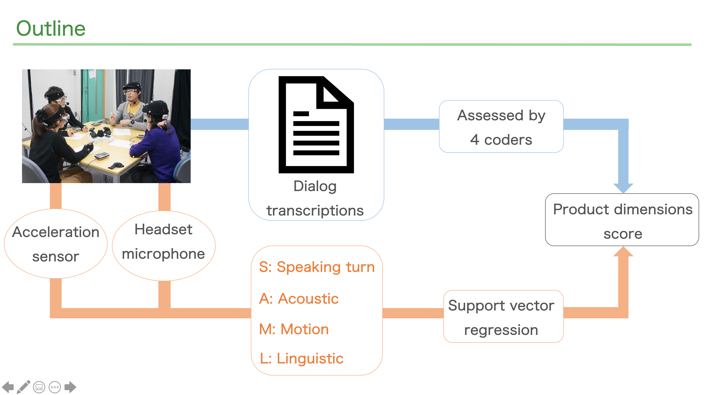

Task-independent Multimodal Prediction of Group Performance Based on Product Dimensions
This paper proposes an approach to develop models for predicting the performance for multiple group meeting tasks, where the model has no clear correct answer.
This paper adopts ”product dimensions” [Hackman et al. 1967] (PD) which is proposed as a set of dimensions for describing the general properties of written passages that are generated by a group, as a metric measuring group output.
This study enhanced the group discussion corpus called the MATRICS corpus including multiple discussion sessions by annotating the performance metric of PD. We extract group-level linguistic features including vocabulary level features using a word embedding technique, topic segmentation techniques, and functional features with dialog act and parts of speech on the word level. We also extracted nonverbal features from the speech turn, prosody, and head movement. With a corpus including multiple discussion data and an annotation of the group performance, we conduct two types of experiments thorough regression modeling to predict the PD. The first experiment is to evaluate the task-dependent prediction accuracy, in the situation that the samples obtained from the same discussion task are included in both the training and testing. The second experiments is to evaluate the task-independent prediction accuracy, in the situation that the type of discussion task is different between the training samples and testing samples. In this situation, regression models are developed to infer the performance in an unknown discussion task. The experimental results show that a support vector regression model archived a 0.76 correlation in the discussion-task-dependent setting and 0.55 in the task-independent setting.
full version link